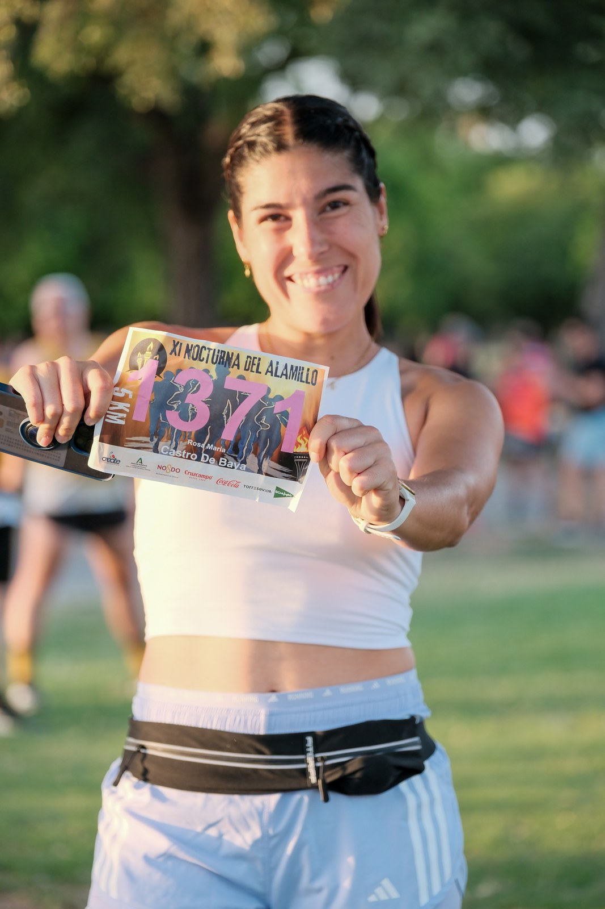
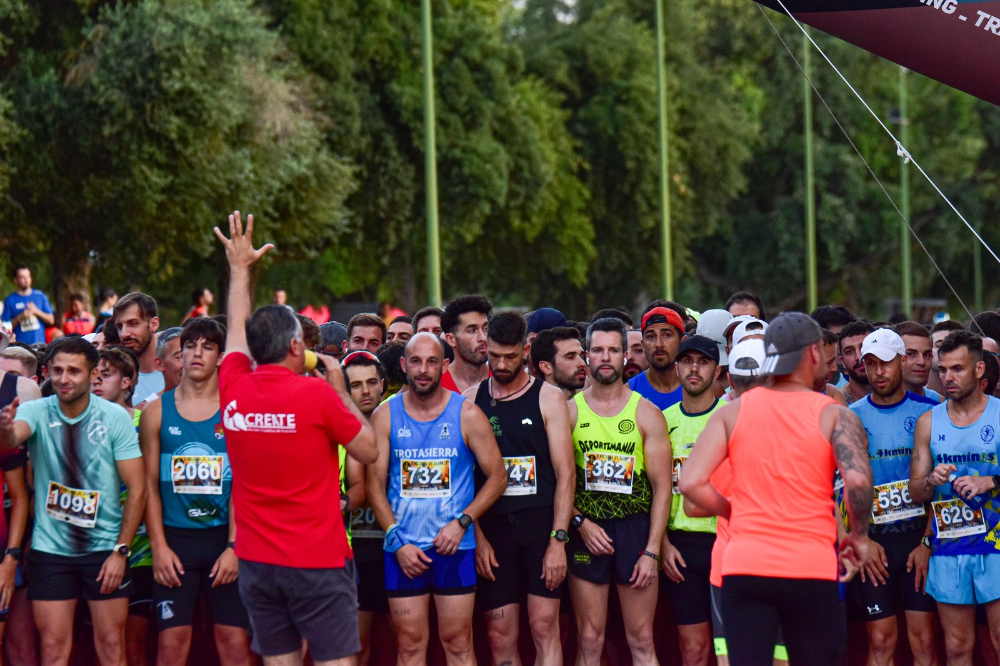

Sevilla's Parque del Alamillo turned out on Friday 12 June 2026 for the eleventh Carrera Nocturna del Alamillo, with event coverage by the Image Media team. Organised by Create, Acción Creativa de Eventos, in collaboration with the Instituto Municipal de Deportes (IMD) of the Ayuntamiento de Sevilla and the Junta de Andalucía, the race set off from the park's ring road at 21:45 on a freshly redesigned 5,000-metre course, with the start moved closer to the Cortijo del Alamillo while the finish stayed in its usual spot from previous editions. Runners followed the glow of torches lighting the route, with the finish line closing 70 minutes after the start. Registration for the 2026 edition was capped at 2,500 entrants, which organisers had billed as a historic mark for the event.

The race was run under chip timing, with General Masculina and General Femenina classifications plus a most-participative-club category, and trophies for the top three men, top three women and top three clubs. Entrants could take on the flat, ring-road loop running or walking, with a sweep vehicle, on-course medical service and a finish-line refreshment point along the route. Every registered participant received a commemorative technical T-shirt, and bibs were collected in advance at the Torre Sevilla shopping centre on 10 and 11 June.

As in previous editions, organisers offered a "Dorsal 0" solidarity entry benefiting the Fundación Martín Álvarez Muela, which funds research into childhood cancer and specifically paediatric DIPG, with a minimum voluntary donation of €3. Image Media is listed among the race's official collaborators alongside sponsors including Coca-Cola, Cruzcampo, Torre Sevilla and El Corte Inglés.
The Image Media coverage team at the XI Nocturna del Alamillo comprised Antonio Galdeano, Samantha Rebeca and Andy Escassi.